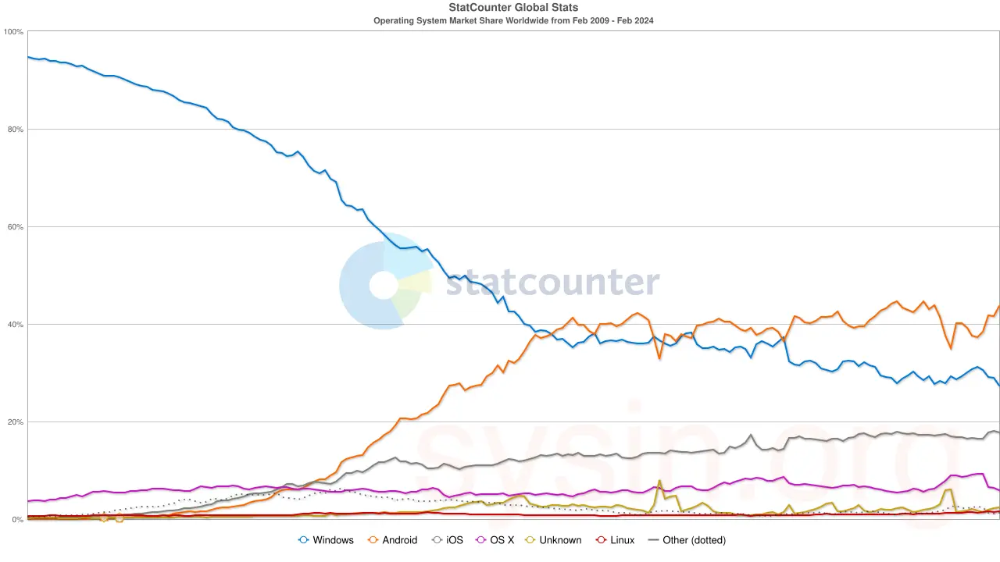
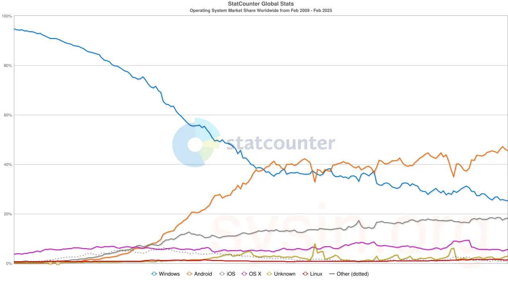
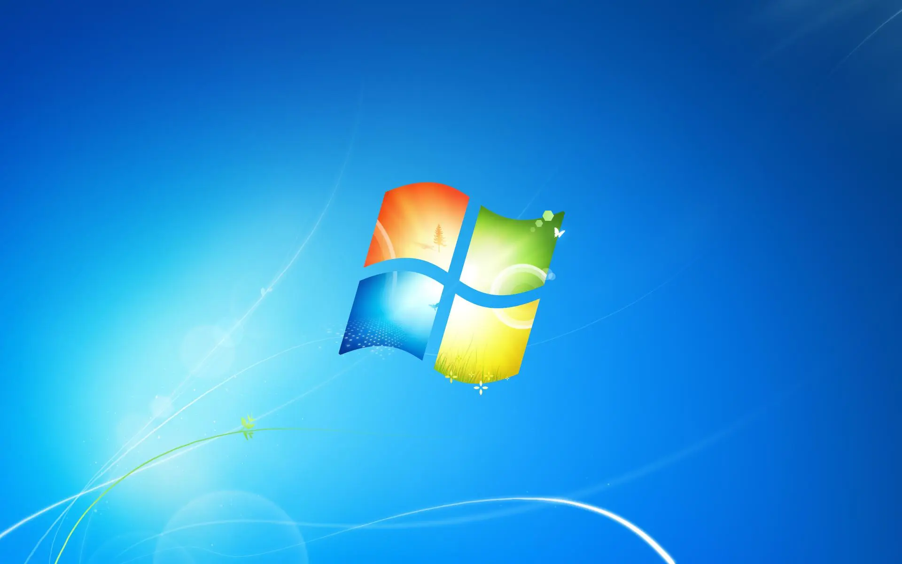
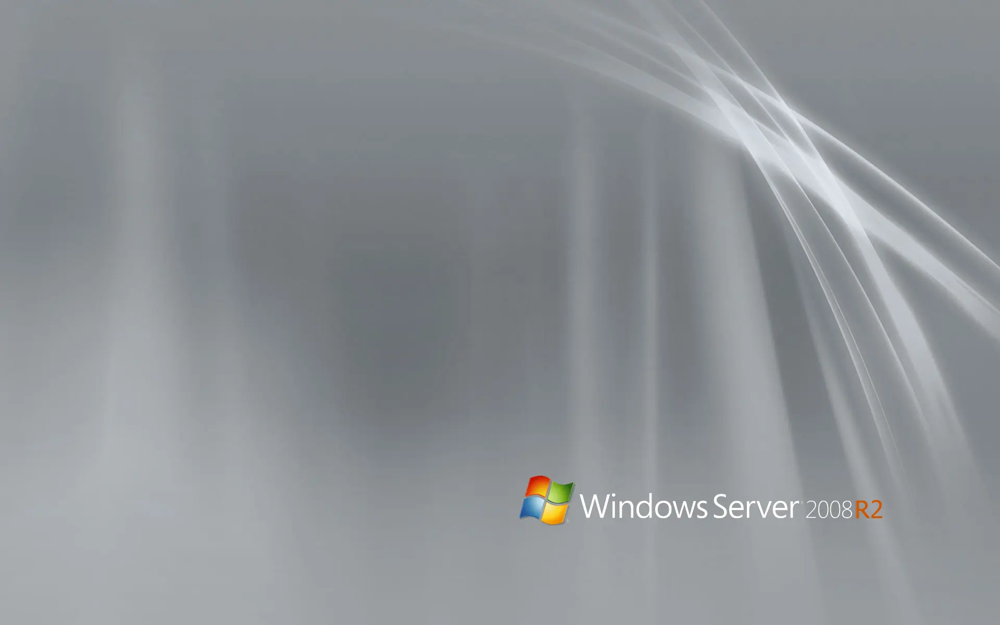

请访问原文链接：Windows 7 & Windows Server 2008 R2 简体中文版下载 (2026 年 1 月更新) 查看最新版。原创作品，转载请保留出处。
作者主页：sysin.org
Windows 7 & Windows Server 2008 R2 简体中文版
基于 simplix 累积更新包制作。
微软盖茨巅峰之作，曾经 “在高端 Unix 市场抬起了头”。

图：全球操作系统份额 2009.02 - 2024.02
点评：该图具体数据仅供参考，但是一个不争的事实：在微软盖茨时代，Windows 是绝对的霸主；在 A3 时代，Unix-Like 系统已经是地球的绝对主宰，Windows 仅在桌面尚有一席之地，大有弃置历史遗忘的角落之势。
实际上 Unix-Like 系统的比例远大于此，灿若繁星的 IoT 设备一般不会访问公共网站。

图：全球操作系统份额 2009.02 - 2025.02
一年过去了，盖茨 Windows ≥ 95%，–> A3 Windows ≈ 25% ≈ iOS+macOS。
映像制作说明
映像集成了至本月的所有更新，还集成了 USB 3.0 和 NVMe 驱动。
Windows 7 和 Windows Server 2008/R2 基本支持已于 2020 年 1 月 14 日结束，如果需要继续获得更新，需要购买 ESU。
扩展安全更新 (ESU) 计划是需要在支持结束后运行某些旧版 Microsoft 产品的客户的最后选择。它包括在产品扩展支持终止日期后最长三年的关键 和/或重要 安全更新。
扩展安全更新将在可用时分发。ESU 不 含新功能、客户请求的非安全更新或设计更改请求 (sysin)。
所有 Windows 7 和 Windows Server 2008/R2 客户，已于 2020 年 1 月 14 日获得更新，因为在此之前操作系统都处于支持状态。2020 年 1 月 14 日 之后，针对这些操作系统的更新仅适用于 ESU 客户。
Windows 7 旗舰版
- Windows 7 旗舰版基于 cn_windows_7_ultimate_with_sp1_x64_dvd_618537.iso（MSDN）
Windows Server 2008 R2 Datacenter 完全安装 (现在仅更新 DC DE)
基于 SW_DVD5_Windows_Svr_DC_EE_SE_Web_2008_R2_64Bit_ChnSimp_w_SP1_MLF_X17-22560.ISO
- Windows Server 2008 R2 Standard (服务器核心安装 & 完全安装)
- Windows Server 2008 R2 Enterprise (服务器核心安装 & 完全安装)
- Windows Server 2008 R2 Datacenter (服务器核心安装 & 完全安装)
- Windows Web Server 2008 R2 (服务器核心安装 & 完全安装)

图：Windows 7 壁纸

图：Windows Server 2008 R2 壁纸
累积更新包自定义用法：
可以根据需要使用补丁包制作自定义的映像，支持 Windows 7 和 Windows 2008 R2 的所有版本。
系统必须至少有 10 GB 的 可用硬盘空间，最好至少有 1 GB 的 可用 RAM。
您可以将干净的 iso 分发拖放到 UpdatePack7R2 上，并获得现成的更新 iso 映像。
为了灵活地安装套件，您可以使用以下按键及其组合：
- 如果需要，键 /Reboot 用于自动重启。
- 切换 /S 用于完全静默安装，没有窗口和消息。登记事项。
- 键 /Silent 被动安装 - 您可以看到进度，但安装是完全自动的。
- 开关 /Temp= 允许设置临时工作目录。它不必为空，但它必须存在。
- 允许 /NoSpace 键跳过检查系统分区上的可用空间，不建议使用它。
- 打开 /FixOn 开关针对 Meltdown 和 Spectre 的保护，而 /FixOff 将其关闭。对于 Win7，如果没有密钥，则禁用保护，而对于 Win2008R2，则启用保护。
例子：
- 需要自动安装所有更新，IE11并重启电脑：UpdatePack7R2.exe /silent /reboot
- 您需要静默安装现有产品的所有更新，并且不要重新启动计算机：UpdatePack7R2.exe /S
下载地址
旧版不定期清理。
Windows 7 Ultimate with SP1 x64 简体中文旗舰版 (2026 年 1 月更新)，含补丁包：
Windows Server 2008 R2 Datacenter SP1 x64 简体中文版 (2026 年 1 月更新)，补丁包同上：
虚机模板下载：
更多：Windows 下载汇总

文章用于推荐和分享优秀的软件产品及其相关技术，所有软件默认提供官方原版（免费版或试用版），免费分享。对于部分产品笔者加入了自己的理解和分析，方便学习和研究使用。任何内容若侵犯了您的版权，请联系作者删除。如果您喜欢这篇文章或者觉得它对您有所帮助，或者发现有不当之处，欢迎您发表评论，也欢迎您分享这个网站，或者赞赏一下作者，谢谢！
 支付宝赞赏
支付宝赞赏  微信赞赏
微信赞赏赞赏一下
敬请注册！点击 “登录” - “用户注册”（已知不支持 21.cn/189.cn 邮箱）。 请勿使用联合登录（已关闭）。